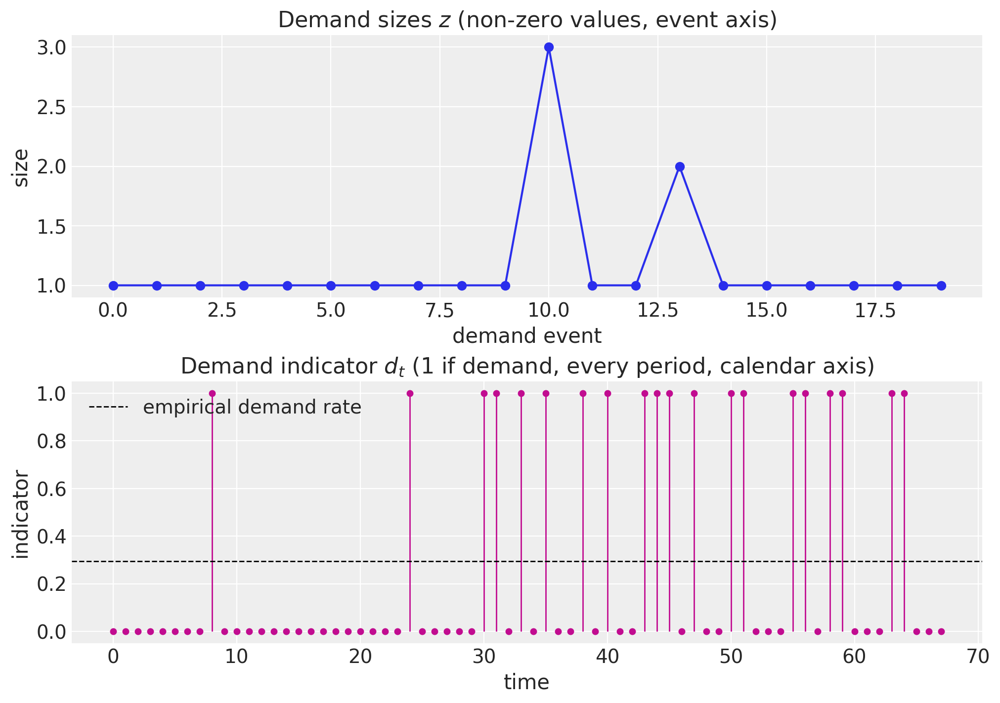
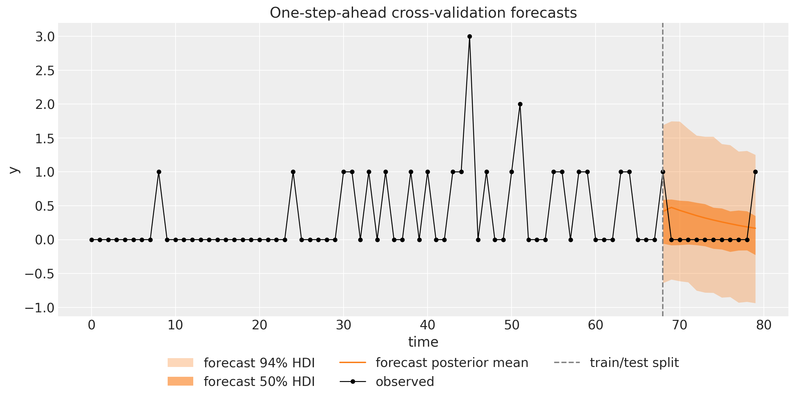

The setup is the same. Intermittent demand series are dominated by zeros, with the occasional non-zero demand arriving at irregular times (spare parts, slow-moving SKUs). Croston’s method splits the series y_t into demand sizesz_t (the non-zero values) and demand intervalsp_t (the gaps between demands), smooths each with simple exponential smoothing, and forecasts the ratio \hat{z}_t / \hat{p}_t: the expected demand per period. Its well-known weakness is that both components update only at demand events. Once demand stops, a Croston forecast never moves again: it stays frozen at the last level no matter how long the drought runs, so it cannot express that a slow item is going obsolete.
TSB fixes exactly this. It keeps the demand-size channel unchanged, but replaces the interval channel with a demand probabilityp_t \in [0, 1] that is smoothed at every period, not just at demand events:
\hat{y}_{t+h} = \hat{z}_t \cdot \hat{p}_t,
the expected demand size times the probability that a demand occurs. Because the probability is updated on every zero as well as every demand, it decays geometrically through a run of zeros and jumps back up at the next demand, so the forecast responds to the recency of demand. That single structural change, one smoothing recursion that runs every period instead of only at events, is the whole story, and it is what this notebook makes concrete. As a side benefit, TSB smooths a probability directly instead of an inverse interval, so it sidesteps the inversion (Jensen) bias and the Syntetos-Boylan correction that the Croston notebook has to reckon with.
Two practical notes on the port, unchanged from the Croston example:
We reuse the same reusable level_channel (the simple exponential smoothing level model from the blog’s exponential smoothing predecessor) on the raw calendar timeline: each level recursion is one call to the package’s ssoe building block, with a boolean gate deciding when the level updates. The only difference from Croston lives in which gate is passed: Croston freezes the level (and masks the likelihood) outside demand events, while TSB’s probability channel updates on every period. Everything plugs straight into plain NumPyro NUTS, to_datatree, and backtest.
The observed series itself plays the role of the covariates: ssoe takes the driving series as an argument, and the package’s predict_in_sample and to_datatree call the model with data=None, so the history has to travel through covariates, which spans the full horizon at prediction time. The model only ever reads the first t_obs rows (the block checks this), so no future information leaks into a forecast.
Prepare notebook
In [1]:
from functools import partialimport arviz as azimport jax.numpy as jnpimport matplotlib.pyplot as pltimport numpy as npimport numpyroimport numpyro.distributions as distimport preliz as pzimport xarray as xrfrom jax import randomfrom matplotlib.artist import Artistfrom matplotlib.axes import Axesfrom numpyro.handlers import scopefrom numpyro.infer import MCMC, NUTS, Predictivefrom numpyro_forecast import ( Horizon, SSOEResult, backtest, eval_coverage, eval_crps, forecast, predictions_to_datatree, ssoe, to_datatree,)from numpyro_forecast.arrays import pad_futurefrom numpyro_forecast.typing import Array, ForecastModelaz.style.use("arviz-darkgrid")plt.rcParams["figure.figsize"] = [10, 6]plt.rcParams["figure.dpi"] =100plt.rcParams["figure.facecolor"] ="white"numpyro.set_host_device_count(n=4)rng_key = random.PRNGKey(seed=42)%load_ext autoreload%autoreload 2%load_ext jaxtyping%jaxtyping.typechecker beartype.beartype%config InlineBackend.figure_format ="retina"
/Users/juanitorduz/Documents/numpyro_forecast/.venv/lib/python3.14/site-packages/preliz/ppls/pymc_io.py:16: UserWarning: PyMC not installed. PyMC related functions will not work.
warnings.warn("PyMC not installed. PyMC related functions will not work.")
/Users/juanitorduz/Documents/numpyro_forecast/.venv/lib/python3.14/site-packages/preliz/ppls/agnostic.py:34: UserWarning: PyMC not installed. PyMC related functions will not work.
warnings.warn("PyMC not installed. PyMC related functions will not work.")
Generate data
We use exactly the same data as the Croston example so the two notebooks are directly comparable: T = 80 periods of intermittent demand drawn from a Poisson distribution with a small rate, y_t \sim \text{Poisson}(0.3), so roughly three quarters of the periods are zero and the non-zero demands are small counts. We hold out the last 15\% of the series as a test window for the fixed-origin forecast (the rolling-origin evaluation at the end refits over this window step by step).
In [2]:
n =80lam =0.3rng_key, rng_subkey = random.split(rng_key)y = random.poisson(key=rng_subkey, lam=lam, shape=(n,)).astype(jnp.float32)t = np.arange(n)n_train =round(0.85* n)n_test = n - n_trainy_train, y_test = y[:n_train], y[n_train:]t_train, t_test = t[:n_train], t[n_train:]print(f"total: {n}, train: {n_train}, test: {n_test}")print(f"share of zero periods: {float(jnp.mean(y ==0)):.2f}")
total: 80, train: 68, test: 12
share of zero periods: 0.73
Throughout the package, time lives at axis -2 and the observation dimension at axis -1. Following the design note above, the training series also serves as the covariates; for the fixed-origin forecast we extend the covariates over the horizon with zeros, which is leak-free because the model never reads past t_obs.
In [3]:
train_data = y_train[:, None]test_data = y_test[:, None]data_full = y[:, None] # full series, used by the cross-validation at the endcovariates_train = train_data # the demand history is the "covariate" of a TSB modelcovariates_full = jnp.concatenate([y_train, jnp.zeros(n_test)])[:, None]print(f"train data shape: {train_data.shape}, full covariates shape: {covariates_full.shape}")fig, ax = plt.subplots()ax.plot(t_train, y_train, "o-", color="black", lw=1, ms=4, label="train")ax.plot(t_test, y_test, "o-", color="C1", lw=1, ms=4, label="test")ax.axvline(n_train, color="gray", ls="--", label="train/test split")ax.legend(loc="upper left")ax.set(title="Simulated intermittent demand series", xlabel="time", ylabel="y");
train data shape: (68, 1), full covariates shape: (80, 1)
Demand sizes and demand probability
The two component series TSB works with make the contrast with Croston explicit. The demand sizesz are the non-zero values in order of appearance, exactly as in Croston. But where Croston derives the inter-demand intervals (one number per demand event, on the event axis), TSB works with the demand indicatord_t = \mathbf{1}[y_t > 0], a 0/1 value at every period on the calendar axis. Smoothing d_t estimates the running probability that a period sees demand; because it is defined on every period, it can decay while zeros pile up, which is the behavior Croston’s event-axis intervals cannot represent.
As in the Croston notebook this cell is exposition only: the model recomputes the indicator on the calendar axis inside its own body.
In [4]:
z = y_train[y_train !=0]is_demand_train = np.asarray(y_train >0)demand_rate =float(is_demand_train.mean())print(f"demand events in train: {z.size} of {n_train} periods")print(f"demand sizes z: {np.asarray(z)}")print(f"empirical demand rate (share of periods with demand): {demand_rate:.3f}")fig, (ax_z, ax_d) = plt.subplots( nrows=2, ncols=1, figsize=(10, 7), sharex=False, layout="constrained")ax_z.plot(np.arange(z.size), np.asarray(z), "o-", color="C0")ax_z.set( title="Demand sizes $z$ (non-zero values, event axis)", xlabel="demand event", ylabel="size")markerline, stemlines, baseline = ax_d.stem(t_train, is_demand_train.astype(float), basefmt=" ")plt.setp(markerline, color="C3", markersize=4)plt.setp(stemlines, color="C3", linewidth=1)ax_d.axhline(demand_rate, color="black", ls="--", lw=1, label="empirical demand rate")ax_d.legend(loc="upper left")ax_d.set( title="Demand indicator $d_t$ ($1$ if demand, every period, calendar axis)", xlabel="time", ylabel="indicator",);
demand events in train: 20 of 68 periods
demand sizes z: [1. 1. 1. 1. 1. 1. 1. 1. 1. 1. 3. 1. 1. 2. 1. 1. 1. 1. 1. 1.]
empirical demand rate (share of periods with demand): 0.294

Prior for the smoothing parameters
Both components get a \text{Beta}(2, 20) prior on their smoothing parameter, the same prior the Croston notebook uses. Its mean is 2/22 \approx 0.09 and most of its mass sits below 0.3, consistent with the standard practice of restricting the smoothing parameter to roughly [0.1, 0.3]: a level that reacts strongly to each observation produces volatile forecasts on sparse data. The blog post uses a slightly more reactive \text{Beta}(10, 40) (mean 0.2); we keep \text{Beta}(2, 20) so that the only difference from the Croston notebook is the structural one (which recursion updates every period), not the prior.
TSB runs simple exponential smoothing on each component, just like Croston. Writing \ell_t for a component’s level and x_t for its input at time t, the demand-size channel updates only at demand events, exactly as in Croston:
The availability channel is where TSB departs. Instead of smoothing inter-demand intervals at events, it smooths the demand indicator d_t = \mathbf{1}[y_t > 0] at every period:
Both branches are the single recursion \ell^p_t = \alpha_p \, d_t + (1 - \alpha_p) \, \ell^p_{t-1}: plain exponential smoothing of a 0/1 series, evaluated on every period. During a run of zeros d_t = 0, so the probability decays by a factor (1 - \alpha_p) each step; at a demand d_t = 1, so it jumps back up. The likelihood at each period is the one-step-ahead prediction x_t \sim \text{Normal}(\ell_{t-1}, \sigma), with the size channel evaluated only at demand events (masked, as in Croston) and the probability channel evaluated at every period. The forecast is the product of the two levels, \hat{y} = \hat{z} \cdot \hat{p}: because \hat{p} \in [0, 1] is used directly, there is no inversion and hence none of Croston’s Jensen bias or Syntetos-Boylan correction to worry about.
One transparency note on the priors, sharper than in the Croston notebook: \text{Normal}(0, 1) on the initial levels allows negative values, which is looser still for the probability channel, whose level is meant to live in [0, 1]. We keep the loose prior for comparability with the blog post and the Croston notebook; centering the probability init near the base demand rate, using a \text{Beta} init, or replacing the Gaussian obs_prob likelihood with a \text{Bernoulli} one (the indicator is, after all, a Bernoulli outcome) are the natural refinements.
Because both components run the same level model, we write it once and compose with NumPyro’s scope handler, exactly as the Croston notebook does. The reusable level_channel samples the three component priors (sites smoothing, init, noise) and hands the package’s ssoe building block a step that emits the pre-update level (the one-step-ahead mean) and a carry_fn that applies the gated update; the block owns the in-sample filter and, when forecasting, the innovation site and the forecast scan. The gate is an xs input padded with zeros over the horizon by pad_future, so the level is frozen there and the forecast is the final level plus iid innovation noise, the level model’s flat forecast distribution; that explicit freeze is also what keeps the cross-validation below leak-free, since backtest hands the model real future rows. Calling the helper under scope(level_channel, "z", divider="_") and scope(level_channel, "p", divider="_") yields the parameter names z_smoothing, z_init, …, and the innovation sites z_eps_future and p_eps_future. This is the identical helper used in the Croston notebook; the entire difference between the two methods is in the tsb body below, in a single argument.
The tsb body then does what is specific to TSB:
Bookkeeping. From the observed prefix of the covariates it builds the demand indicator is_demand and the float demand_indicator. Where Croston passes is_demand as the event gate to both channels, TSB passes an all-True gate (every_period) to the probability channel, so that channel updates on every period. That one substitution is the method. Over the forecast horizon the all-true gate is padded with zeros like any other: TSB’s multi-step forecast is the flat level at the end of training, the assumption made visible in code rather than left implicit.
In sample. The size likelihood "obs" is masked to demand events (only demand sizes inform \ell^z), exactly as in Croston. The probability likelihood "obs_prob" is not masked: every period’s 0/1 indicator informs \ell^p. The deterministic sites "rate" (\ell^z_{t-1} \cdot \ell^p_{t-1}) and "prob" (\ell^p_{t-1}) expose the fitted rate and availability for the plots below. Rows carry the observation axis (time lives at axis -2 and the observation at axis -1 throughout the package), so the series is sliced as covariates[..., :h.t_obs, :] and the scalar level is init[None], which lines the deterministics and likelihoods up with h.data without any reshaping.
Out of sample. When h.future > 0 each channel’s block draws its innovations at z_eps_future and p_eps_future and returns the sampled future values as r.y_future; the body exposes them as "z_forecast" and "p_forecast", their product as the "forecast" site the package’s forecast driver reads, and the frozen levels’ product as "rate_future". As with Croston, the multi-step forecast is flat, but its level is the already-decayed probability at the end of training, so a forecast made right after a long drought starts lower than one made right after a demand.
In [6]:
def level_channel(h: Horizon, values: Array, gate: Array) ->tuple[SSOEResult, Array]:"""Masked simple exponential smoothing level channel on the calendar axis. Samples the component priors (sites ``smoothing``, ``init``, ``noise``) and runs the gated level recursion through `ssoe()`, whose ``eps_future`` innovation site provides the flat forecast predictive. Meant to be called under `numpyro.handlers.scope()`, which prefixes the site names per component. This is the exact helper used in the Croston example; TSB differs only in the ``gate`` it passes for the probability channel. Parameters ---------- h The train/forecast horizon for the current model call. values Observed component values on the calendar axis, shape ``(t_obs, 1)``; read only where ``gate`` is true. gate Boolean update indicator on the calendar axis, shape ``(t_obs, 1)``; the level only updates where it is true (all-true for TSB's every-period probability channel), and never over the horizon. Returns ------- tuple[SSOEResult, Array] The block result (one-step-ahead means, frozen forecast means, and the sampled future values) and the observation noise scale. """ smoothing = numpyro.sample("smoothing", dist.Beta(concentration1=2, concentration0=20))# jnp.asarray only narrows numpyro's union return type for the type checker. init = jnp.asarray(numpyro.sample("init", dist.Normal(loc=0, scale=1))) noise = jnp.asarray(numpyro.sample("noise", dist.HalfNormal(scale=1)))def step(level, gate_t):# Emit the pre-update level (the one-step-ahead mean); update only where gated.return level, lambda y_t, _: jnp.where( gate_t, smoothing * y_t + (1- smoothing) * level, level ) result = ssoe( h,"eps", values, init[None], step, dist.Normal(loc=0, scale=noise), xs=pad_future(gate, h.future), )return result, noisedef tsb(covariates: Array, data: Array |None=None) ->None:"""TSB's method as two scoped exponential smoothing level channels. Identical to the Croston body except the probability channel smooths the demand indicator at *every* period (``every_period`` gate, unmasked likelihood) instead of inter-demand intervals at demand events only. Parameters ---------- covariates The observed demand series itself, with time at axis ``-2``; only the first ``h.t_obs`` rows are read. data Observed demand with time at axis ``-2``, or ``None`` when the drivers sample the observation sites. """ h = Horizon.from_data(covariates, data) y = covariates[..., : h.t_obs, :] # observed history only; never reads beyond t_obs is_demand = y >0 demand_indicator = is_demand.astype(y.dtype) every_period = jnp.ones_like(is_demand) # TSB updates the probability at EVERY period# Demand-size channel: byte-for-byte identical to Croston (updates only at demand events). z, z_noise = scope(level_channel, "z", divider="_")(h, y, is_demand)# Availability channel: smooths the 0/1 indicator every period (the one structural change). p, p_noise = scope(level_channel, "p", divider="_")(h, demand_indicator, every_period) numpyro.deterministic("rate", z.mu * p.mu) numpyro.deterministic("prob", p.mu) numpyro.sample("obs", dist.Normal(loc=z.mu, scale=z_noise).mask(is_demand), obs=h.data) numpyro.sample("obs_prob", dist.Normal(loc=p.mu, scale=p_noise), # not masked: every period contributes obs=demand_indicator, )if h.future >0: numpyro.deterministic("rate_future", z.mu_future * p.mu_future) numpyro.deterministic("z_forecast", z.y_future) numpyro.deterministic("p_forecast", p.y_future) numpyro.deterministic("forecast", z.y_future * p.y_future)
Inference with NUTS
We fit the model on the training window with plain NumPyro: the No-U-Turn Sampler through MCMC, running 4 chains of 1{,}000 warmup and 1{,}000 sampling steps each. As in Croston the posterior has six scalar parameters, three per component, and the small fit_nuts helper wraps the call so the cross-validation below can refit every fold with the same settings.
We then export the draws into an ArviZ-schema xarray.DataTree with to_datatree, which restores the (chain, draw) structure (we pass num_chains=4). Because we pass the extended covariates, the tree automatically carries predictions groups with the out-of-sample forecast draws. We register both per-timestep deterministics, "rate" and "prob", so they share the tree-wide time coordinate.
az.summary on the six scalar parameters gives the convergence picture in one call: posterior means and standard deviations, the 94\% HDIs, effective sample sizes, and \hat{R}.
The chains mix well: the \hat{R} values are essentially 1 and the effective sample sizes are healthy. The demand-size parameters (z_smoothing, z_init, z_noise) reproduce the Croston picture, because that channel is unchanged: the smoothing posterior barely moves from the \text{Beta}(2, 20) prior, while the initial level concentrates near the typical demand size of about 1. The probability channel tells the more interesting story. Its smoothing posterior also stays low, which is the correct answer for this stationary series: an i.i.d. demand process has no genuine trend in its occurrence rate, so smoothing slowly and tracking the base rate is exactly right. Its initial level and noise scale come out slightly tighter than their demand-size counterparts (p_init and p_noise have smaller standard deviations than z_init and z_noise), because the indicator gives the probability channel one observation on every one of the 68 periods, against the 20 demand events the size channel sees. The trace plots confirm the picture.
For the in-sample story we plot the posterior of the deterministic "rate" site: the running TSB fitted rate \ell^z_{t-1} \cdot \ell^p_{t-1}, the expected demand per period given the history so far. Compared with the Croston rate, which is piecewise constant and can only step at demand events, the TSB rate is visibly alive between demands: because the availability probability decays on every zero, the rate slopes downward through each run of zeros and jumps back up at the next demand. That sawtooth is the signature of the every-period update, and it is the single clearest picture of how TSB differs from Croston. This cell also defines the small plotting helpers (stacked_draws and plot_band_forecast) shared by the remaining band plots.
The same caveat as in the Croston notebook applies: the tree’s posterior_predictive group (the "obs" site) carries the masked demand-size likelihood, so its draws describe the size of a demand given that one occurs and are not comparable to the raw, mostly-zero series. This is why the cross-validation below scores only out-of-sample forecasts (eval_train=False).
In [10]:
def hdi_label(prob: float, prefix: str="") ->str:r"""Legend label for an HDI band, e.g. ``$94\%$ HDI``.""" percent =f"{prob:.0%}".replace("%", r"\%")returnf"{prefix}${percent}$ HDI"hdi_probs = (0.5, 0.94)hdi_alphas = [0.6, 0.3] # 50% band darker, 94% band lighterdef stacked_draws(group: xr.DataTree | xr.DataArray, var: str) -> np.ndarray:"""Stack a tree variable's ``(chain, draw)`` dims into a leading sample axis. Parameters ---------- group A tree group holding ``var`` with dims ``(chain, draw, time, obs_dim)`` (typed as the union ``tree[...]`` returns; a group always arrives here). var Name of the variable to extract. Returns ------- np.ndarray The draws with shape ``(sample, time, obs_dim)``. """return ( group.dataset[var] .stack(sample=("chain", "draw")) .transpose("sample", "time", "obs_dim") .to_numpy() )def plot_band_forecast( draws: np.ndarray, x: np.ndarray, color: str, label_prefix: str="", observed: Array | np.ndarray |None=None, figsize: tuple[float, float] = (12.0, 6.0),) ->tuple[Axes, list[Artist]]:r"""Plot the posterior mean line and the $50\%$/$94\%$ HDI bands of ``draws``. Wraps ``predictions_to_datatree`` and ``az.plot_lm`` with the notebook-wide band styling (inner band darker via ``hdi_alphas``) and labels the artists. Overlays (observed series, split lines, extra point estimates) and the legend are the caller's responsibility. Parameters ---------- draws Predictive draws with shape ``(sample, time, 1)``. x Numeric x values of length ``time``. color Matplotlib color for the bands and the mean line. label_prefix Prefix for the legend labels, e.g. ``"forecast "``. observed Optional observed data stored alongside the draws. figsize Figure size passed to ``plot_lm``. Returns ------- tuple[Axes, list[Artist]] The axes and the labeled band and mean-line handles for the legend. """ idata = predictions_to_datatree(draws, x, ["y"], observed=observed) pc = az.plot_lm( idata, y="obs", x="t", plot_dim="time", ci_kind="hdi", ci_prob=hdi_probs, smooth=False, point_estimate="mean", visuals={"ci_band": {"color": color},"observed_scatter": False,"pe_line": {"color": color, "alpha": 1.0, "width": 1.5}, }, aes={"alpha": ["prob"]}, alpha=hdi_alphas, figure_kwargs={"figsize": figsize}, ) bands = pc.viz["ci_band"]["t"] band_94, band_50 = bands.sel(prob=0.94).item(), bands.sel(prob=0.5).item() band_94.set_label(hdi_label(0.94, prefix=label_prefix)) band_50.set_label(hdi_label(0.5, prefix=label_prefix)) pe_line = pc.viz["pe_line"]["t"].item() pe_line.set_label(f"{label_prefix}posterior mean") ax = pc.viz["figure"].item().axes[0]return ax, [band_94, band_50, pe_line]rate_draws = stacked_draws(tree["posterior"], "rate")ax, handles = plot_band_forecast( rate_draws, t_train.astype(float),"C0", label_prefix="rate ", observed=train_data, figsize=(10.0, 6.0),)(obs_line,) = ax.plot( t_train, np.asarray(y_train), "o-", color="black", lw=1, ms=4, label="observed")ax.legend( handles=[*handles, obs_line], loc="upper center", bbox_to_anchor=(0.5, -0.1), ncol=4,)ax.set(title="In-sample TSB rate", xlabel="time", ylabel="y");
/Users/juanitorduz/Documents/numpyro_forecast/.venv/lib/python3.14/site-packages/arviz_plots/plots/lm_plot.py:360: UserWarning: When multiple credible intervals are plotted, it is recommended to map 'alpha' aesthetic to 'prob' dimension to differentiate between intervals.
warnings.warn(
The availability probability
The rate above is a product of two levels; the availability probability \ell^p is the component that carries all of the TSB behavior, so it is worth looking at on its own. The plot below is the posterior of the "prob" site against the demand-event times (the rug at the bottom) and the empirical demand rate (dashed line).
Two things stand out. First, the probability path decays through every run of zeros and jumps at each demand, oscillating around the base rate: this is precisely the per-period responsiveness Croston lacks, where the interval channel would hold a flat line across the same zeros. Second, the amount of decay per zero is governed by \alpha_p, and with the low posterior smoothing the per-step change is small: within a single short gap the probability barely moves, but across the sparse first third of the series the drops accumulate and pull it down toward zero, and it climbs back above the base rate once demands arrive frequently (the second half of the window is demand-dense). On this stationary series that gentle, base-rate-tracking behavior is the honest answer, because there is no real trend in the occurrence rate to chase. The mechanism that produces the sawtooth is exactly the mechanism that would let the forecast fall toward zero if demand genuinely dried up, which is what makes TSB the right tool when obsolescence is a real possibility.
/Users/juanitorduz/Documents/numpyro_forecast/.venv/lib/python3.14/site-packages/arviz_plots/plots/lm_plot.py:360: UserWarning: When multiple credible intervals are plotted, it is recommended to map 'alpha' aesthetic to 'prob' dimension to differentiate between intervals.
warnings.warn(
Forecast
The predictions group of the tree already holds the out-of-sample draws of the "forecast" site over the test window: the product of the two components’ predictive samples. We plot the posterior mean and median together with the 50\% and 94\% HDI bands against the held-out data, and score the forecast with the CRPS (lower is better).
Like Croston, the multi-step forecast is flat: with no future observations the levels stay put, so TSB predicts the same demand rate for every horizon step. The difference is where that flat level comes from. It starts from the availability probability as of the end of the training window, which here is relatively high because training ends in a demand-dense stretch; had it ended in a long drought, the forecast would start proportionally lower. That sensitivity to how recently demand was seen is exactly what the one-step-ahead cross-validation below makes visible. The predictive is right-skewed (the solid mean sits above the dashed median), and because the probability channel is a Gaussian centered on a small value, a sizable share of its draws fall below zero: the inner 50\% band reaches the axis. This is the same pragmatic Normal-likelihood choice as the blog post, and modeling the indicator with a \text{Bernoulli} likelihood (or the size with a truncated or log-normal one) is the natural fix.
/Users/juanitorduz/Documents/numpyro_forecast/.venv/lib/python3.14/site-packages/arviz_plots/plots/lm_plot.py:360: UserWarning: When multiple credible intervals are plotted, it is recommended to map 'alpha' aesthetic to 'prob' dimension to differentiate between intervals.
warnings.warn(
Component forecasts
To see where the combined forecast comes from, we sample the two component predictives directly with Predictive, handing it the posterior draws and requesting the "z_forecast" and "p_forecast" deterministic sites, and plot them side by side with a single faceted plot_lm call. The demand-size component predicts the size of the next demand; the demand-probability component predicts the chance a period sees any demand at all. Their product is the forecast above. The probability component targets a quantity in [0, 1], unlike Croston’s unbounded inverse interval, though our Gaussian likelihood still lets some predictive draws stray outside that range, one more reason a \text{Bernoulli} or \text{Beta} probability channel is the natural next step.
/Users/juanitorduz/Documents/numpyro_forecast/.venv/lib/python3.14/site-packages/arviz_plots/plots/lm_plot.py:360: UserWarning: When multiple credible intervals are plotted, it is recommended to map 'alpha' aesthetic to 'prob' dimension to differentiate between intervals.
warnings.warn(
One-step-ahead cross-validation
The fixed-origin forecast uses one training window. The sharper experiment, and the one where TSB and Croston visibly part ways, is a rolling-origin, one-step-ahead evaluation: refit the model on an expanding training window and forecast a single step, repeatedly, across the whole test span. backtest runs this loop with test_window=1 and stride=1; a forecast_fn closure calls fit_nuts on each fold’s training window and hands the draws to the package’s forecast driver. With min_train_window=n_train the folds tile the test span exactly, one fold per held-out period, and keep_predictions=True retains each fold’s forecast samples; num_samples records the ensemble size the closure returns (4 chains of 1{,}000 draws). As in the Croston notebook, the covariates handed to the closure span the full window including the held-out row, and the model’s padded gates are what keep that row out of the levels. Alongside the CRPS we track the empirical coverage of the central 50\% and 94\% intervals.
In [14]:
def forecast_fn( rng_key: Array, model: ForecastModel, train_data: Array, train_covariates: Array, full_covariates: Array, num_samples: int,*, batch_size: int|None=None,) -> Array | np.ndarray:"""Fit ``model`` on the training window with NUTS and forecast the test horizon.""" key_fit, key_fc = random.split(rng_key) fold_posterior = fit_nuts(key_fit, model, train_data, train_covariates)return forecast( key_fc, model, fold_posterior, train_data, full_covariates, batch_size=batch_size )metrics = {"crps": eval_crps,"coverage_50": partial(eval_coverage, alpha=0.5),"coverage_94": partial(eval_coverage, alpha=0.94),}rng_key, rng_subkey = random.split(rng_key)results = backtest( rng_subkey, data_full, data_full, # the series doubles as the covariates, sliced per fold by backtestlambda: tsb, forecast_fn=forecast_fn, metrics=metrics, test_window=1, # one-step-ahead forecasts stride=1, # one fold per held-out period min_train_window=n_train, # folds tile the test span exactly num_samples=4_000, # 4 chains x 1,000 draws, what fit_nuts returns eval_train=False, # in-sample "obs" scoring is not meaningful here (see above) keep_predictions=True,)split_points = [r.t1 for r in results]test_crps = [r.metrics["crps"] for r in results]print(f"folds: {len(results)} (split points: {split_points})")
Because the folds tile the test span, we can concatenate the per-fold forecast samples into a single array of one-step-ahead predictive draws and plot them in one go.
This is the mirror image of the Croston plot. The Croston example shows its one-step-ahead forecast barely moving while zeros accumulate, because Croston’s levels only update at demand events. TSB, updating its probability every period, does the opposite: through a run of zeros the one-step-ahead forecast slides downward, and it steps back up when a demand lands. Even on this stationary series, where the true occurrence rate is constant and so the swings are modest, the qualitative behavior is unmistakably different: TSB’s forecast tracks the recency of demand, which is precisely Croston’s structural blind spot.
In [15]:
predictions = [r.prediction for r in results if r.prediction isnotNone]cv_pred = np.concatenate([np.asarray(pred) for pred in predictions], axis=1)print(f"assembled one-step-ahead draws: {cv_pred.shape}")ax, handles = plot_band_forecast( cv_pred, t_test.astype(float), "C1", label_prefix="forecast ", observed=test_data)(obs_line,) = ax.plot(t, np.asarray(y), "o-", color="black", lw=1, ms=4, label="observed")split_line = ax.axvline(n_train, color="gray", ls="--", label="train/test split")ax.legend( handles=[*handles, obs_line, split_line], loc="upper center", bbox_to_anchor=(0.5, -0.1), ncol=3,)ax.set(title="One-step-ahead cross-validation forecasts", xlabel="time", ylabel="y");
assembled one-step-ahead draws: (4000, 12, 1)
/Users/juanitorduz/Documents/numpyro_forecast/.venv/lib/python3.14/site-packages/arviz_plots/plots/lm_plot.py:360: UserWarning: When multiple credible intervals are plotted, it is recommended to map 'alpha' aesthetic to 'prob' dimension to differentiate between intervals.
warnings.warn(

CRPS per fold
The per-fold CRPS makes the same point numerically. Where Croston’s per-fold score sits at essentially two flat levels (its forecast never moves), TSB’s score glides: through the run of held-out zeros the forecast decays steadily toward zero, fitting each accumulating zero a little better, so the CRPS falls smoothly across the drought. It jumps back up only at the two held-out demands (the first fold and the last), where the now-low forecast misses a realized 1. This is the opposite of Croston’s pattern, where the inflated, frozen rate scores the demands better than the zeros; TSB’s decaying rate instead pays its price on the demands and earns it back across the far more numerous zeros.
With a single observation per fold, per-fold coverage is a 0/1 indicator, so we aggregate: the empirical coverage across all folds against the nominal levels, computed from the assembled draws with eval_coverage. We also compare the one-step-ahead CRPS with the fixed-origin CRPS from the forecast section.
The same caveat as in the Croston notebook applies: eval_coverage measures coverage of the central quantile interval, while the plotted bands are HDIs, and for this right-skewed predictive the two genuinely differ, so these numbers check the calibration of central intervals rather than literally of the bands shown above.
In [17]:
cv_crps = eval_crps(cv_pred, test_data)cov_50 = eval_coverage(cv_pred, test_data, alpha=0.5)cov_94 = eval_coverage(cv_pred, test_data, alpha=0.94)print(f"one-step-ahead CRPS over the test span: {cv_crps:.4f}")print(f"fixed-origin CRPS over the test span: {crps_test:.4f}")print(f"empirical 50% coverage: {cov_50:.2f} (nominal 0.50)")print(f"empirical 94% coverage: {cov_94:.2f} (nominal 0.94)")
one-step-ahead CRPS over the test span: 0.2265
fixed-origin CRPS over the test span: 0.2467
empirical 50% coverage: 0.50 (nominal 0.50)
empirical 94% coverage: 1.00 (nominal 0.94)
On this series TSB actually comes out ahead of Croston, and for an instructive reason. Its one-step-ahead and fixed-origin CRPS (0.23 and 0.25) are lower than the Croston notebook’s (0.34 and 0.38), and its central 50\% interval covers exactly at nominal (0.50) where Croston’s covered almost nothing (0.08). Two things drive this. First, TSB smooths a probability directly, so it avoids the upward inversion bias that inflates the Croston rate; its fitted rate sits lower, much closer to the zero-heavy realizations. Second, the forecast’s spread reaches down across zero (partly, it must be said, because the Gaussian probability channel spills below zero, which a \text{Bernoulli} channel would achieve more honestly), so the interval actually contains the zeros that dominate the series. The one structural weakness both methods share, a predictive of a rate rather than a count, is what still keeps the 94\% interval over-covering (it contains every held-out point). And the headline advantage, a forecast that decays when demand truly stops, does not show up in the aggregate score on i.i.d. data at all: it stays latent here, waiting for a series that genuinely goes obsolete to turn it into a decisive difference.
A final note: TSB versus ARMA
It is worth being explicit about why a classical ARMA model is not the tool here. ARMA (and ARIMA) describe a continuous, autocorrelated series fluctuating around a stable mean with additive noise, and they forecast by extrapolating that autocorrelation. Intermittent demand breaks every one of those assumptions: the series is mostly exact zeros with a spike-at-zero marginal, the per-period mean is a tiny rate rather than a level to revert to, and an ARMA fit would smear a smooth continuous prediction across the zeros while never separating how much is demanded from whether a demand occurs. TSB (like Croston) instead decomposes the series into a demand size and a demand probability, which is the structurally correct representation for this kind of data. What the notebook does share with the ARMA example is only the mechanical scaffolding, the ssoe building block, the series-as-covariates carrier and the expanding-window backtest loop, not the modeling assumptions.
Teunter, R. H., Syntetos, A. A., & Babai, M. Z. (2011). Intermittent demand: Linking forecasting to inventory obsolescence. European Journal of Operational Research, 214(3), 606-615. The paper that introduces the TSB method.
Croston, J. D. (1972). Forecasting and stock control for intermittent demands. Operational Research Quarterly, 23(3), 289-303.